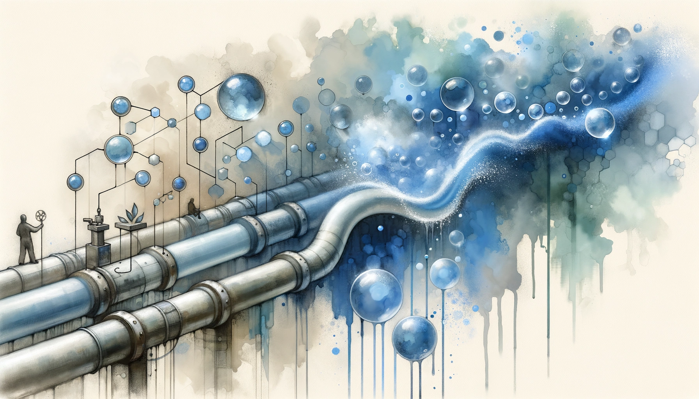

written by Eric J. Ma on 2026-03-15 | tags: automation efficiency airgaps workflow processes agents imagination skill mapping labs

In this blog post, I explore the concept of "air gaps"—those manual steps in business or scientific processes where humans bridge the gap between digital systems. I share real-world examples from labs and software workflows, discuss why these gaps matter, and offer practical advice on identifying and closing them with automation and coding agents. Curious how closing even small air gaps can transform your team's efficiency and free up mental bandwidth?
I owe this term to my colleague Wenhao Liu. He was the first one I saw at work who clearly articulated about air gaps and how they relate to building agents for work.
So what exactly is an air gap? It is any point in a business or scientific process where a human has to intervene and perform manual work before a digital system can continue. The system cannot go end to end on its own; the human is the bridge.
Air gaps are everywhere. Here are a few examples: A laboratory machine exports a file to a local hard disk. A human copies that file and pastes it into an S3 bucket. That handoff is an air gap. The system stops at the hard disk and waits for a person.
In wet lab science, air gaps take physical form. A scientist designs an experiment, walks into the lab, and executes it by hand. In this state, the company/team/org has an air gap in its scientific process. No robotic system can take over from design to execution.
Both of these examples share a common pattern. The definition I have settled on is this: an air gap is any place where rote manual work is performed by a human that could have been done by a computer. (Robots are computers with sensors and actuators for the physical world.)
Think of your processes as pipes. Air gaps are bubbles trapped in those pipes. They slow the flow. They disrupt continuity. They introduce delays and errors.
The costs compound over time. A five-minute manual handoff, repeated daily across a team of twenty, adds up to real hours. A week-long delay because someone was on vacation and could not move the file. A transcription error because a human typed a number wrong. A lost opportunity because the data sat in a local folder instead of flowing into the analysis pipeline.
Air gaps also create cognitive overhead. Every time a human has to remember to perform a manual step, that is mental bandwidth not spent on creative work. The air gap is a tax on attention.
Now, a clarification. The goal here is not to eliminate humans from everything. The goal is to eliminate humans from the rote and routine. Creative work, judgment, and decision making stay with us. Copying files, transferring plates, and typing data into forms do not.
You cannot close an air gap until you see it. And you cannot see it until you sit down and map out exactly how your process works. In other words, process mapping.
This mapping exercise is the unsexy work that precedes automation. Most teams skip it. They jump to solutions before understanding the problem. But you need the map.
Here is how to do it.
Pick one process. It could be a data pipeline, a lab workflow, or a business approval chain. Walk through it step by step. Ask these questions at each step:
Each answer points to a potential air gap.
Write it down. Draw it out. Make the process visible. Once the map exists, the air gaps reveal themselves. The next step is prioritization. Which air gaps cause the most pain? Which ones are easiest to close? Start there.
Enough abstraction. Let me show you what air gaps look like in practice, from my own work and from the broader landscape.
A sequencing machine finishes a run. It writes the data to a local drive. A technician notices the run is complete, navigates to the folder, selects the files, copies them, navigates to the shared storage system, and pastes. Minutes pass. Sometimes hours, if the technician is busy.
This is an air gap. The machine knows when the run finishes. The machine has network access. The destination storage has an API. Automation can close this gap with a simple script that watches for new files and uploads them.
The fix is not technically difficult; it is, conceptually, a cron job with rsync. What makes it hard is that the air gap is invisible until someone maps the process and asks why a human is doing this work.
I used to manually check GitHub to track my daily work. I would open my profile page, scroll through recent commits, open the pull requests tab, check which ones I had opened or reviewed, and then type notes into a document. This took maybe ten minutes per day.
Then I remembered the GitHub CLI exists. I also remembered that coding agents can run CLI commands.
I built a skill that pulls four categories of activity automatically: my opened pull requests, pull requests I reviewed or commented on, my commits, and issues I created. The agent runs this skill as part of my daily sign-off routine. The air gap closed.
The time savings are modest. But the mental overhead vanished. I no longer need to remember to check GitHub. The information flows to me.
The autonomous lab, sometimes called a lights-out lab, is the ultimate expression of closing air gaps. The vision is a laboratory that runs itself: experiments are designed, executed, analyzed, and iterated without human intervention.
In practice, autonomous labs are full of micro air gaps. Each one must be identified and closed.
Plate transfers. A protocol requires moving a plate from one instrument to another. Does a human do this? If so, that is an air gap. Robotic arms and conveyor systems can close it.
Master reagent prep. Someone mixes buffers and reagents by hand at the start of each week. Could a liquid handling robot do this instead? Probably. That is an air gap.
File movement. Instruments write data locally. Humans move data to shared storage. This is the file schlepping problem again, repeated across every machine in the lab.
Standardized analyses. As a data scientist, this one is close to my heart. Most labs have a set of standard analyses they run on every dataset. Quality control plots, basic statistics, alignment checks. A human opens a notebook, loads the data, runs the cells, and exports results.
This is an air gap. Standardized analyses can be automated. They can also be made adaptable. An LLM-powered coding agent can take a standard analysis template and adjust parameters within a confined range of design choices. The human specifies the intent. The agent handles the implementation.
Closing the loop. The ultimate air gap in scientific research is the gap between analysis and experiment design. A human looks at results, draws conclusions, and designs the next experiment. What if the results could flow back into experiment design automatically? What if an agent could propose the next experiment based on what the data showed?
This is the direction autonomous labs are moving. But getting there requires closing every air gap along the chain.
I wrote about this in a previous post. The biggest blockers to closing air gaps are technical skill and imagination.
If you cannot imagine a future state where your tedious work is performed by a coding agent, you will not see the possibility. The air gap remains invisible.
This is a failure of imagination, not a failure of technology. The tools exist. The APIs exist. The agents exist. What is missing is the mental leap from "this is how we have always done it" to "this is how we could do it."
Imagination grows from exposure. The more you see what is possible, the more you can imagine for your own work. Watch what other teams are doing. Read about automation in adjacent fields. Talk to people who have closed similar gaps.
Imagination alone is not enough. You also need the skill to build the automation.
That skill, at some level, means knowing how to program. It means understanding APIs, scripting, and how systems talk to each other. It means knowing that cron jobs and web hooks can be configured.
The good news is that the barrier to entry is lower than ever. Coding agents can help you write the code. The skill you need is not deep software engineering. It is enough programming literacy to describe what you want and recognize whether the output is correct.
Sometimes the blocker is not you. Sometimes it is the system.
Some organizations block programmatic access to their tools. It may be that a SaaS application has no API, or the API is disabled for security reasons, or that a legacy database has no query interface, only a web portal. A legacy laboratory information management system may require a human to click through screens instead of secured APIs.
These are also air gaps. The system itself prevents automation.
If the blocker is cybersecurity concerns, push for scoped, tracked access. You do not need full API permissions to close a specific air gap. You need enough access to move the data that belongs in your pipeline. That access can be limited, logged, and auditable.
If the system truly has no programmatic interface, browser or desktop automation agents can close the gap. A headless browser can log in, navigate, click, and extract. It is slower and more fragile than an API, but it works.
But here is the good news. The rise of coding agents changes the calculus for closing air gaps.
Before, you needed a software engineer to write the automation script. Now, you can describe what you want in plain language and let the agent write the code.
This does not mean you can ignore technical literacy. You still need to verify the output, debug when things break, and understand enough to specify the problem clearly. But the implementation barrier is lower.
Browser agents extend this further. If a system has no API, a browser agent can act as the interface. Log in, click the buttons, extract the data, and feed it into your pipeline.
The key insight is that agents are not a replacement for mapping your processes. They are a tool for closing the air gaps you have already identified. The mapping still matters. The imagination still matters. The skill to recognize whether the agent's output is correct still matters.
What changes is the speed of iteration. You can try closing an air gap in an afternoon instead of a sprint. You can experiment with different approaches quickly. The feedback loop tightens.
Here is the right question to ask when you find yourself being asked to do something repeatedly: "Can I remove this bottleneck for you? Is there a way I can make it so that you never have to ask me this again?" The goal is to build systems that use agents to not need human intervention as much as possible, not to create systems that depend on humans more and more. As one person put it, "the more I have asked myself that question, the more capable he has become." (source)
The guiding principle is simple. To butcher the Biblical phrase, "Give unto robots what belongs to robots, and have humans do what humans can do." Or to paraphrase another person, use robots for the dull, dirty, and dangerous work.
Keep the human in the loop for creative, judgment-heavy work. The rote and routine should flow through pipes without bubbles.
Start mapping. Find the air gaps. Close them one by one. The compounding effect over time is enormous once micro-efficiencies become part of your work.
What looks like a small efficiency gain today becomes a transformed process tomorrow. The lab that closed its file schlepping air gaps is one step closer to autonomous operation. The team that automated their daily reporting has mental bandwidth for harder problems.
Close every air gap you can see!
@article{
ericmjl-2026-closing-air-gaps,
author = {Eric J. Ma},
title = {Closing air gaps},
year = {2026},
month = {03},
day = {15},
howpublished = {\url{https://ericmjl.github.io}},
journal = {Eric J. Ma's Blog},
url = {https://ericmjl.github.io/blog/2026/3/15/closing-air-gaps},
}
I send out a newsletter with tips and tools for data scientists. Come check it out at Substack.
If you would like to sponsor the coffee that goes into making my posts, please consider GitHub Sponsors!
Finally, I do free 30-minute GenAI strategy calls for teams that are looking to leverage GenAI for maximum impact. Consider booking a call on Calendly if you're interested!